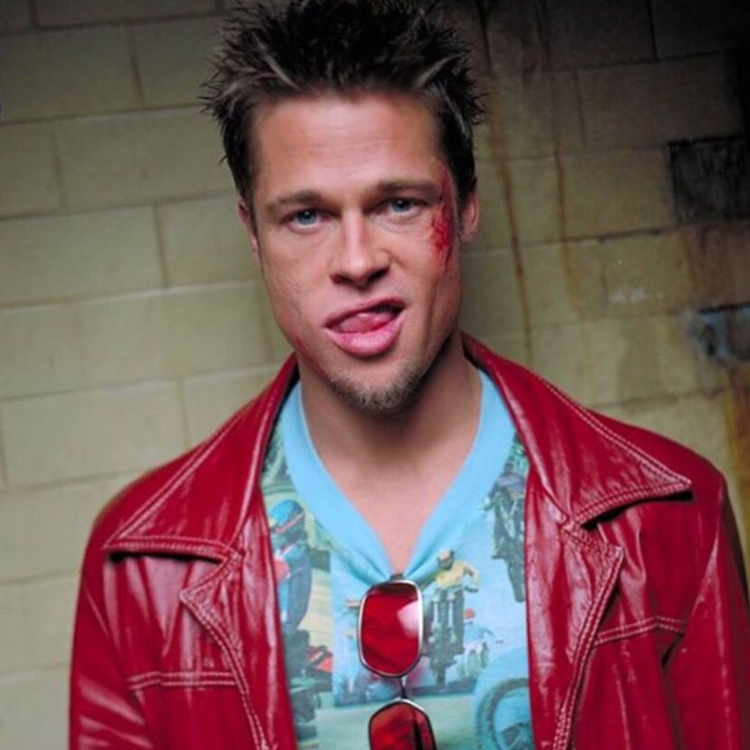

|  |
1)Fight ClubDövüş Kulübünün birinci kuralı: Asla Dövüş Kulübü hakkında konuşma... Dövüş Kulübünün ikinci kuralı: Asla ve asla dövüş kulübü hakkında konuşma... Jack, hayatın sıradanlığına kapılmış bir sigorta memurudur. Uzun bir süredir 'insomnia' yani uykusuzluk hastalığından şikayetçidir. Kendi psikolojik sıkıntılarından kurtulabilmek adına grup terapilerine katılmaktadır. Terapiler esnasında Marla adında bir kızla tanışır. Bir süre sonra da hayatını değiştirecek olan Tyler Durden ile... Durden, Jack'in ulaşmak istediği tüm hedeflere ulaşmış olan bir adamdır ve Jack'i asla hakkında konuşulmaması gereken bir organizasyon olan 'Dövüş Kulübü' ile tanıştıracaktır. David Fincher'ın kısa sürede kült mertebesine erişen filminin popülerliği dillere destan. Filmin başrollerinde de Brad Pitt, Edward Norton ve Helena Bonham Carter gibi ünlü simaları görmek mümkün... İlk kural: Fight clubtan bahsedilmesi yasaktır. Teklif dahi edilemez. |

|
2)Esaretin BedeliEsaretin Bedeli, Andy ve Red isimli iki mahkumun parmaklıklar ardında kurdukları dünyanın hikayesini anlatıyor. Andy Dufresne, genç ve başarılı bir bankerdir. Karısını ve karısının sevgilisini öldürmek suçundan yargılanır ve ömür boyu hapis cezası alır. Shawsank Hapishanesi'nde dayak, işkence, tecavüz, her türlü durum yaşanmaktadır fakat Andy gene de hayata bağlı ve iyimserdir. Bu tutumu etrafındakileri de etkiler. Andy umutlu bakış açısıyla çevresindeki tüm mahkumları, parmaklıklar arkasında bile özgür bir yaşam olabileceğine inandırır. Andy'nin bu çabalarına ortak olacak bir arkadaşı da olacaktır: Red.Bir Stephen King uyarlaması olan filmde Morgan Freeman ve Tim Robbins başrolde. Film, 1995'te, aralarında en iyi film adaylığı da olmak üzere tam 7 dalda Oscar'a aday gösterildi |